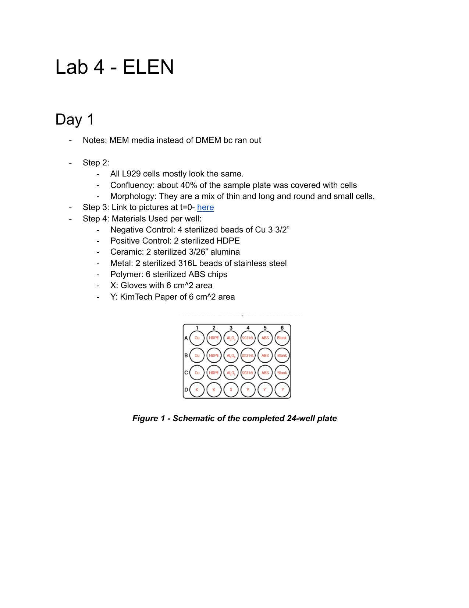
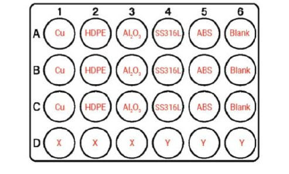
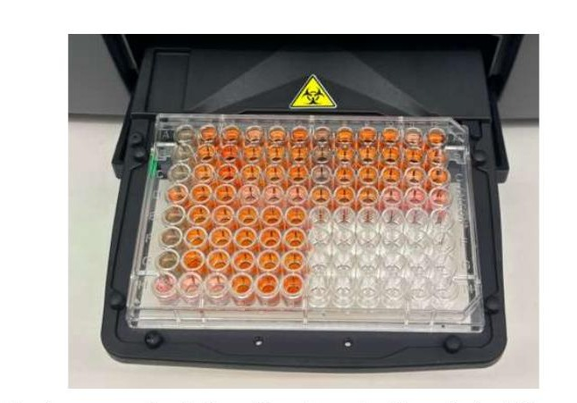
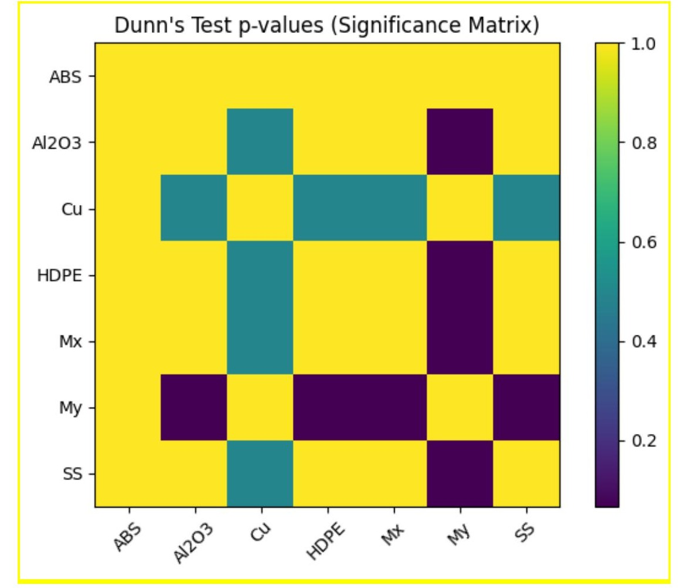
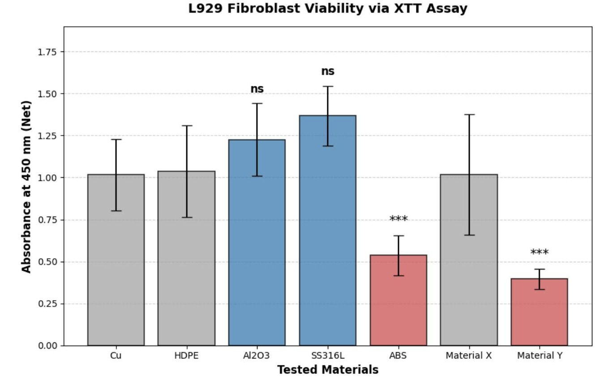
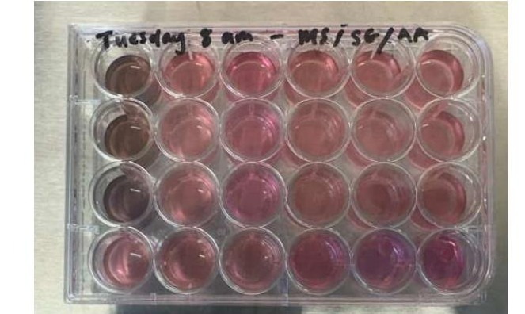
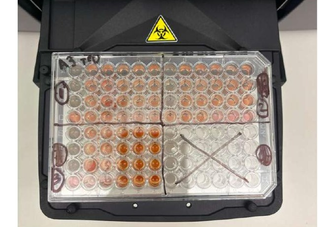

The aim of this project was to determine which of seven candidate materials, copper, high-density polyethylene (HDPE), alumina (Al₂O₃), stainless steel 316L, acrylonitrile butadiene styrene (ABS), and two team-selected materials, are cytocompatible with L929 murine fibroblasts, using both qualitative and quantitative in vitro cytotoxicity methods defined by ISO 10993-5.
Before any material can be used in a medical device, its biocompatibility has to be established. A cytotoxic material can trigger inflammation, impair healing, or cause cell death once it's in contact with living tissue, and finding that out after implantation is far too late. ISO 10993-5 defines standardized in vitro screening methods specifically so that unsafe materials can be ruled out early, before they ever reach the cost and risk of animal or human testing.
This project applied two of those methods, direct contact and extract-based (XTT) cytotoxicity testing, to five standard reference biomaterials plus two materials of the team's choosing (nitrile gloves and KimWipes), to determine relative cytotoxicity and identify which candidates are actually safe to build on.
L929 murine fibroblasts were seeded into a 24-well plate, with each material tested in triplicate alongside a copper negative control and an HDPE positive control. Materials were sized to a fixed extraction ratio (6 cm²/mL) per ISO 10993-5 and 10993-12, then incubated with the cells for one week before evaluation across three lab sessions.

Seeded the 24-well plate with L929 fibroblasts and placed sterilized samples of each material into triplicate wells, copper (negative control), HDPE (positive control), alumina, stainless steel 316L, ABS, plus two team-selected materials (nitrile glove, KimWipe), then incubated for one week.
Removed materials from the 24-well plate and imaged each well to qualitatively assess cell morphology and confluency (direct contact method). In parallel, aliquoted extract from each well into a shared 96-well plate to prepare for the XTT assay.
Added the XTT labeling mixture to the 96-well plate, incubated 2 hours, then read spectrophotometric absorbance at 450 nm (formazan product) and 660 nm (reference). Absorbance is directly proportional to viable cell metabolism, and inversely proportional to cytotoxicity.
The color gradient across the 96-well plate after XTT staining tells the story visually, orange formazan product develops in wells with viable, metabolically active cells, while wells with cytotoxic materials stay clear. This gradient became the first qualitative signal, well before the absorbance readings were even taken.

Two separate statistical approaches were used, matched to the type of data each method produced.
Direct-contact cytotoxicity scores (0–3 scale, per ISO 10993-5) are nominal/ordinal data across more than two groups, so a Kruskal-Wallis test was used rather than a parametric ANOVA. The result, H = 18.71, p = 0.0047, confirmed significant differences in qualitative cytotoxicity between materials. Dunn's test was then run as a post-hoc to identify exactly which pairs of materials differed significantly from each other.

XTT absorbance is continuous, quantitative data, so a one-way ANOVA was used to test for overall differences in viability across materials (F = 7.57, p = 0.0009, highly significant). A Tukey HSD post-hoc test then compared every material directly against the HDPE control: no significant difference from HDPE is evidence a material is biocompatible; a significant difference, especially with lower absorbance, is evidence it's cytotoxic.
Qualitative and quantitative results agreed closely. SS316L, Al₂O₃, and HDPE scored non-cytotoxic (0) across all trials and posted the highest XTT absorbance values, meaning highest cell viability. The team-selected nitrile glove performed just as well, essentially matching the HDPE control. ABS showed mild-to-moderate cytotoxicity, and KimWipe (Material Y) was the clear outlier: a cytotoxicity score of 3 (severely cytotoxic) and the lowest absorbance of any material tested.
| Rank | Material | Avg. Absorbance | Interpretation |
|---|---|---|---|
| 1 | SS316L | 1.367 | Highest viability |
| 2 | Al₂O₃ | 1.225 | High |
| 3 | HDPE | 1.037 | Moderate / high |
| 4 | Material X (glove) | 1.017 | Moderate |
| 5 | Copper | 1.016 | Moderate |
| 6 | ABS | 0.536 | Low |
| 7 | Material Y (KimWipe) | 0.396 | Low, most cytotoxic |



Copper was the one notable discrepancy: it scored moderately cytotoxic (2) qualitatively, but its XTT absorbance was statistically indistinguishable from several viable materials. That mismatch is a useful reminder that qualitative scoring is inherently subjective, based on visually comparing color and cell morphology against a reference chart, while the XTT assay measures actual metabolic activity directly, making it the more objective and reproducible of the two methods.
Conclusion: SS316L, Al₂O₃, and HDPE are the strongest candidates for further biomedical development given their high cell viability and non-cytotoxic scoring. KimWipe material should be avoided entirely in any cell-contacting application, and ABS should be treated with caution pending further testing.
The complete lab notebook and post-lab analysis, day-by-day observations, statistical code, and full discussion of the XTT assay chemistry.